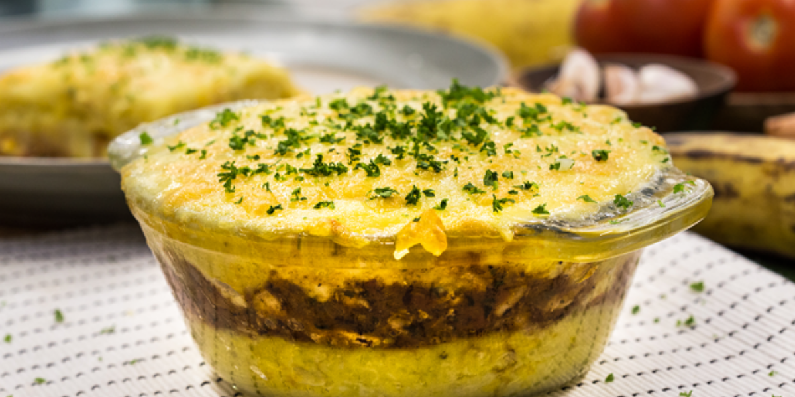

Pastelón de Pollo y Plátano

Prepacaion
30 Min

Espera
3 H

Total
3 H 30 Min

Porciones
8 Personas
Ingredientes
(1228 g) 7 Plátanos maduros cortados en dados
(1500 ml) 1.5 Litros Agua
(60 g) 4 Cucharadas Mantequilla
(120g.) 1/2 tz de Leche Evaporada IDEAL®
(454 g) 1 Libra Pechuga De Pollo Cortada en dados
(10 g) 1 Sobre Consomé De Pollo Maggi®
(15 g) 1 Cucharada Aceite De Oliva
(75 g) 1/2 Taza Cebolla cortada finamente
(16 g) 8 Piezas Ajo cortados finamente
(340 g) 1 1/2 Taza Tomate sin piel
1 Pizca Pimienta Negra
(6 g) 1 Cucharada Cilantro cortado finamente
(221 g) 2 tazas queso Mozzarella Nestlé Qué Rico! rallado
Preparacion
1En una cacerola colocar el plátano maduro y el agua, cocinar por 15 minutos o hasta que estén blandos los plátanos.
2Colar los plátanos y colocar en un tazón, añadir la mantequilla, la leche Evaporada IDEAL® y hacer un puré. Reservar.
3En un tazón colocar el pollo y marinar con Consomé de Pollo MAGGI®
4En una cacerola verter el aceite a fuego alto, sofreír la cebolla y el ajo por 1 minutos, añadir el pollo y cocinar por 5 minutos.
5Agregar el tomate sin piel bajar el fuego, cocinar por 10 minutos añadir la pimienta y el cilantro, apagar el fuego.
6En un pírex colocar una cama de puré de plátano, luego una de pollo guisado, una de queso, cubrir con el resto de puré de plátano maduro, colocar otra cama de queso y llevar al horno a 180 grados por 10 minutos o hasta gratinar.